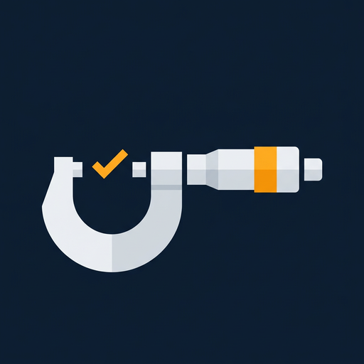
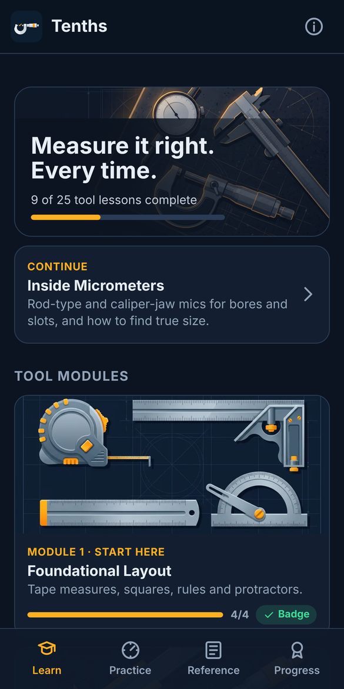
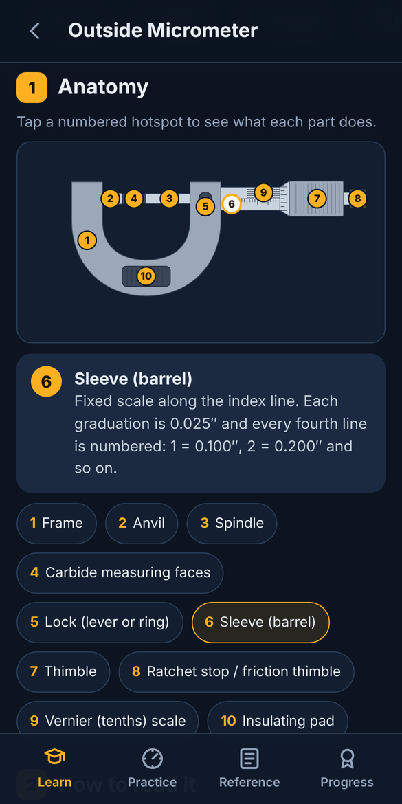
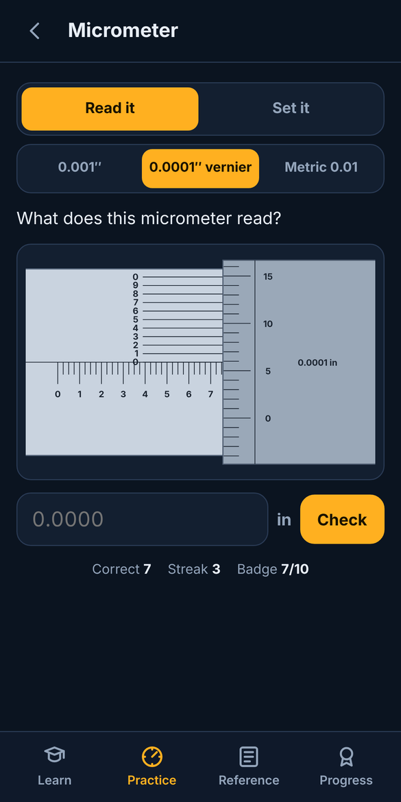
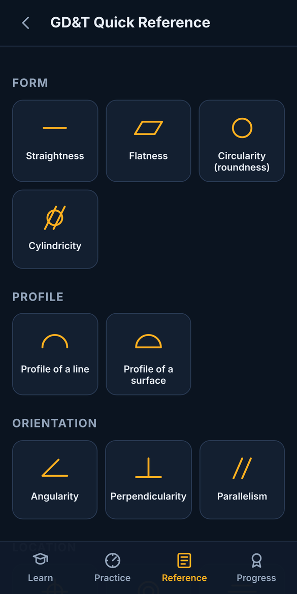

Tenths: Metrology & Inspection

Tenths: Metrology & Inspection is an offline training app for precision measurement, made for machinists, quality inspectors, apprentices and engineering students.
No account, no ads, no tracking. Works offline.




Questions, corrections or feedback: Sales@midtekpower.com
The app stores progress only on your device. Use Progress → Reset all progress, or uninstall the app, to remove it. No data is held by the developer.
Tenths is an independent training aid and is not affiliated with any tool manufacturer or standards body.